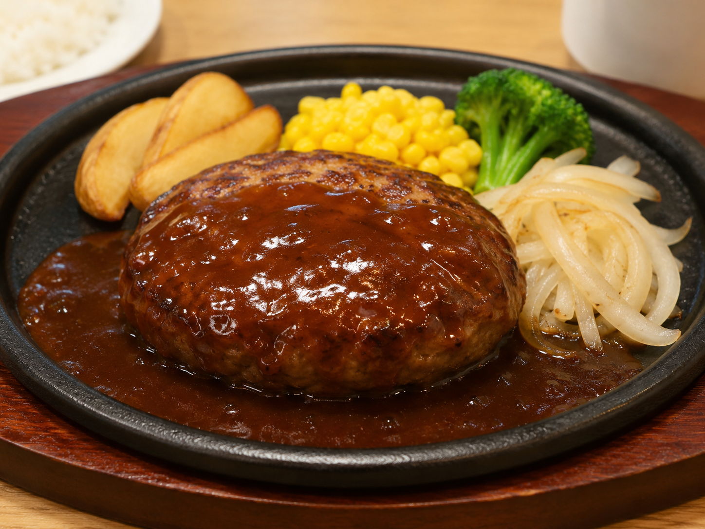
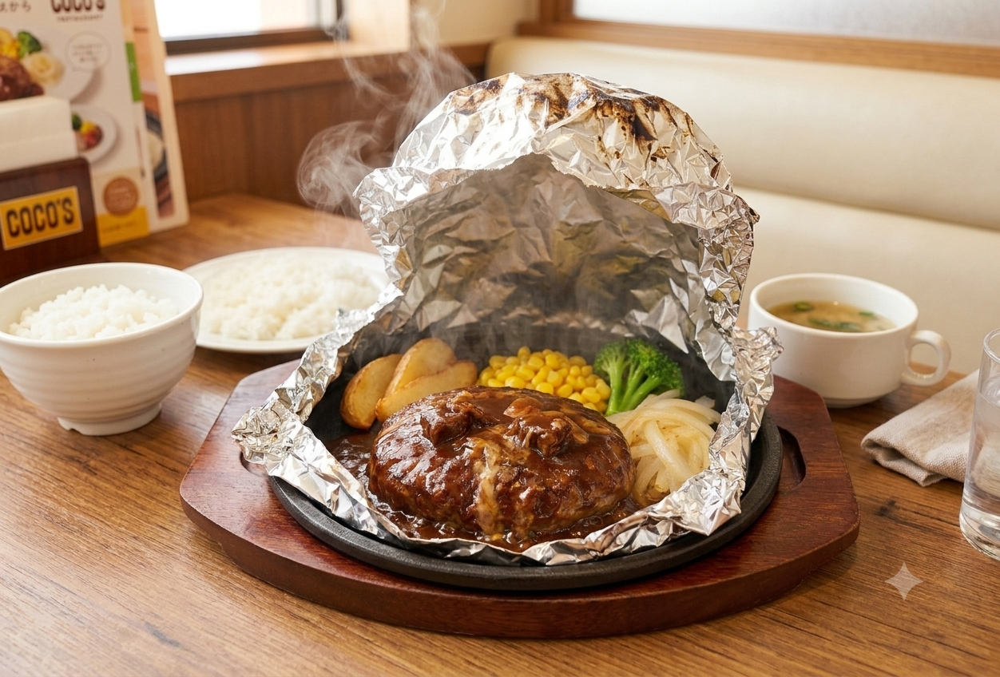
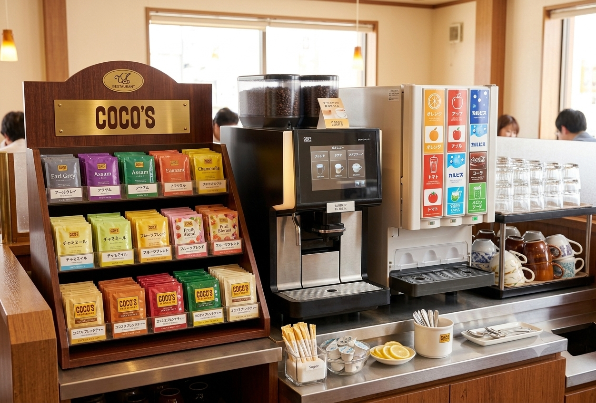
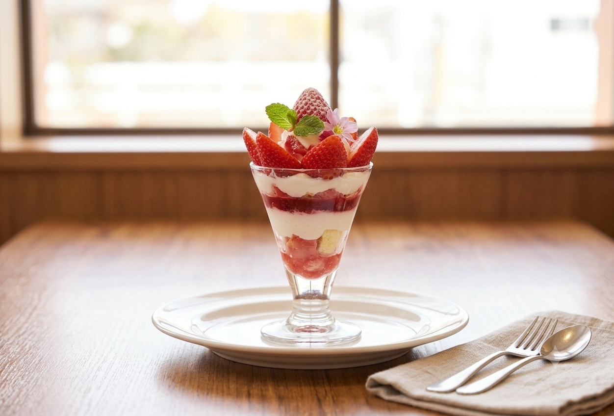
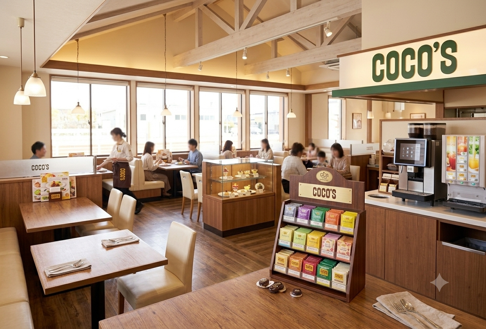
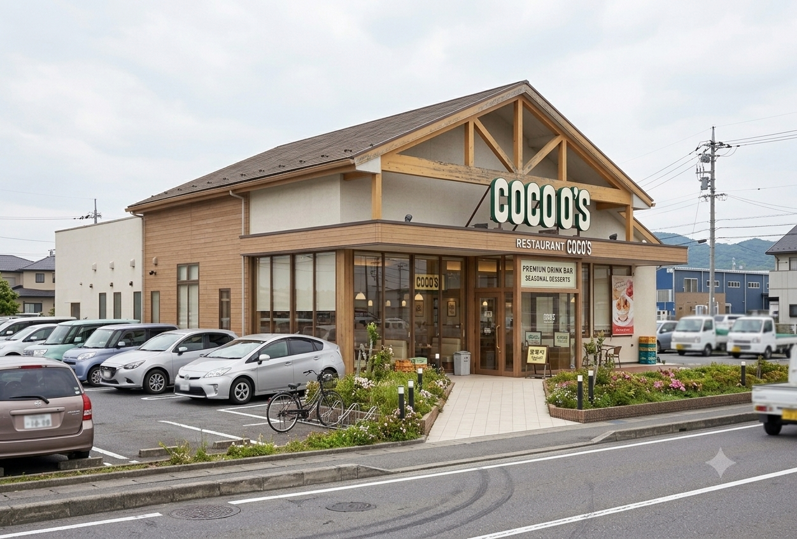

ココスについて
ココスは全国に展開する人気ファミリーレストランチェーンです。 幅広い年代のお客様に親しまれ、 豊富なグランドメニューや季節のスイーツを手ごろな価格で楽しめる心地よい空間を提供しています。

ココスは全国に展開する人気ファミリーレストランチェーンです。 幅広い年代のお客様に親しまれ、 豊富なグランドメニューや季節のスイーツを手ごろな価格で楽しめる心地よい空間を提供しています。

20年以上愛され続ける「濃厚ビーフシチューの包み焼きハンバーグ」や、ジューシーな「ビーフハンバーグステーキ」が代名詞！

厳選された茶葉から淹れる豊富な紅茶やハーブティー、本格的なコーヒーマシンなどが魅力。お食事だけでなく、カフェタイムの作業やおしゃべりにもぴったり！

年間を通して、いちご、シャインマスカット、栗など、その時期の旬のフルーツを贅沢に使った期間限定フェアが開催。

○○円

○○円

○○円


A. 一部店舗で対応しています。
A. 多くの店舗で利用できます。